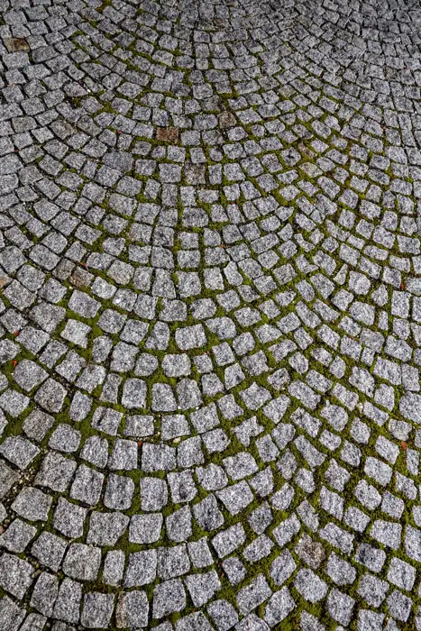
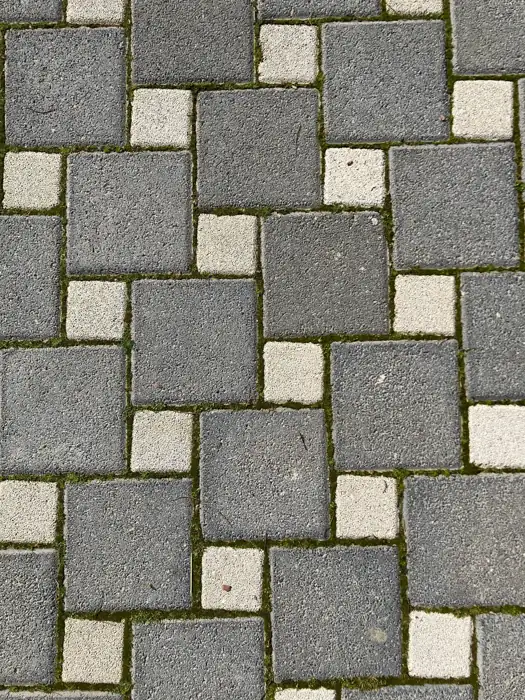
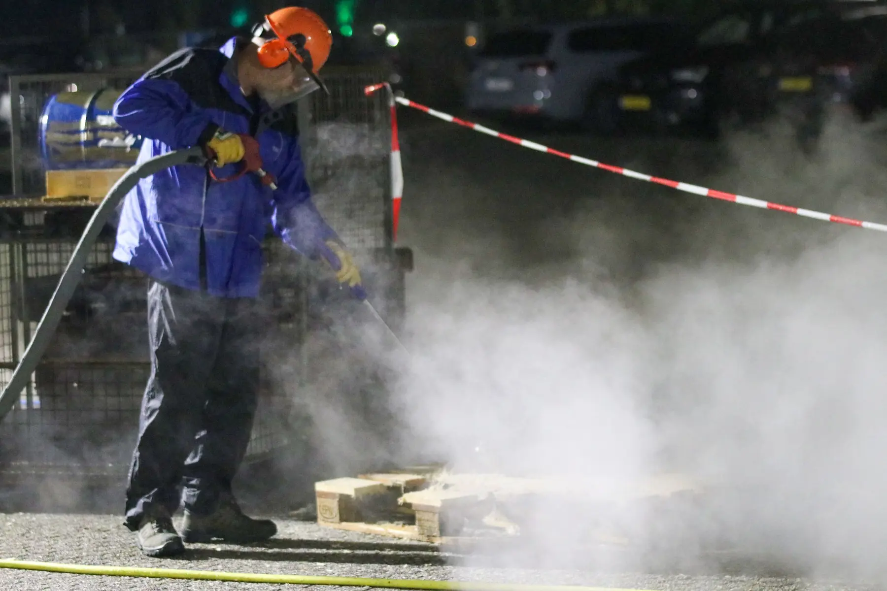
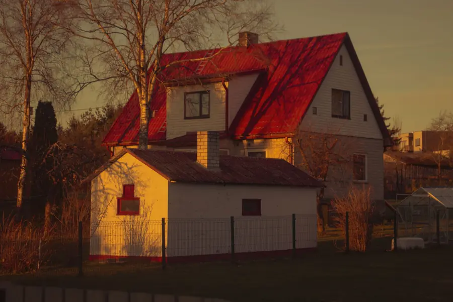

Vesipesu OÜ · Vändra, Põhja-Pärnumaa
Mustus on ajutine.
Survepesu sillutisele, terrassile, fassaadile, katusele ja aiale. Kirjeldage pinda, me vastame.
Mida survepesu eemaldab
Sammal kivide vahel. Rohekas kiht seinal. Hall kile terrassil.
Aastatega koguneb pindadele muda, tolm, vetikad ja sammal. Survepesu viib selle ära ja toob nähtavale pinna, mis see algselt oli.
Iga materjal talub eri survet ja eri otsikuid. Seepärast küsime enne alustamist, mis pind see on, kui suur ja kui määrdunud, ning teeme pakkumise selle põhjal.
Kirjeldage oma pinda

Teenused
Mida me pesema tuleme
Meie põhitegevus on survepesu. Allpool on levinumad pinnad. Kas teie pind või töö mahub nimekirja, ütleme päringu peale: küsige meilt.
-
01
Sillutis ja kõnniteed
Kivi- ja betoonsillutis, trepid, sissesõidud ja platsid.
Küsi pakkumist -
02
Terrassid
Puit-, plaat- ja betoonpinnad. Puit talub survet teisiti kui kivi, seepärast küsime esmalt materjali.
Küsi pakkumist -
03
Fassaadid ja seinad
Majaseinad, müürid ja piirdeseinad. Vastame, millised katted pesu taluvad.
Küsi pakkumist -
04
Katused
Katusekatete survepesu, kui pind seda lubab. Katuse tüübi ja kõrguse kohta küsige meilt.
Küsi pakkumist -
05
Aiad ja piirded
Puit- ja metallpiirded, väravad, aiamööbel ja muud välipinnad.
Küsi pakkumist -
06
Sõidukid ja tehnika
Autod, haagised ja tehnika. Mis liiki sõidukeid ja kus me pesta saame, küsige meilt.
Küsi pakkumist
Töö sees
Vesi, surve, selge tulemus
Vajutage pildile, et seda suuremalt vaadata. Nooleklahvid liigutavad pildilt pildile.

Surve, vesi ja kannatlik käsi.
Hea tulemus algab õigest küsimusest: mis pind see on, kui suur ja kui määrdunud.
Saada päringKuidas see käib
Kolm sammu puhta pinnani
-
1
Kirjeldage
Kirjutage, milline pind see on, kui suur (m²) ja mis linnas või vallas. Foto aitab, aga pole kohustuslik.
-
2
Vastame
Vaatame andmed üle, küsime vajadusel juurde ja teeme pakkumise.
-
3
Lepime kokku
Töö ulatus ja aeg lepitakse kokku enne alustamist.

Piirkond
Vändrast Pärnumaale ja lähiümbrusesse
Asume Vändra alevis, Põhja-Pärnumaa vallas. Põhitöö piirkond on Põhja-Pärnumaa ja Pärnumaa, lähiümbrus kokkuleppel.
Täpse tööpiirkonna ja sõidukulu kohta küsige meilt. Kirjutage päringusse oma linn või vald, siis teame kohe, kuhu tulla.
- Vändra alev, Põhja-Pärnumaa vald
- Eraisikud ja ettevõtted: küsige meilt
Kontakt
Kirjeldage pinda, me vastame.
Kirjutage, mida soovite pesta, kui suur pind on ja kus see asub. Hinna ja aja ütleme päringu põhjal.
- +372 5330 0535
- vesipesu1@gmail.com
- Vändra alev, Põhja-Pärnumaa vald
Pärnumaa ja lähiümbrus: küsige